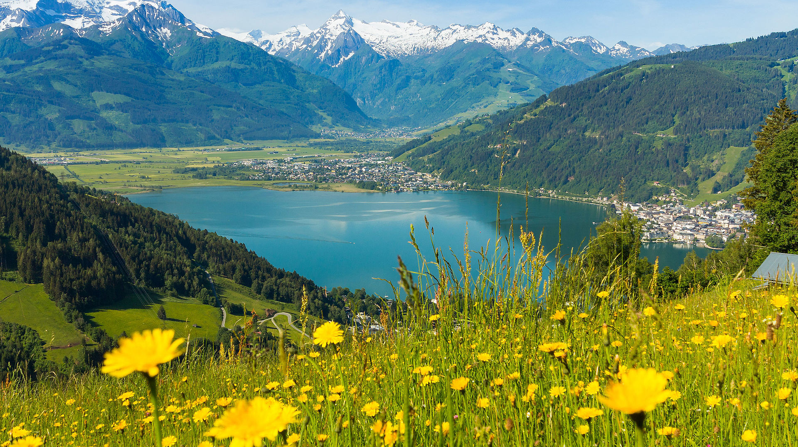

Zeller See
Fläche: ca. 4,7 km²
Details: Ein wunderschöner See im Salzburger Land, umgeben von den Alpen und der Stadt Zell am See.
Ideal für Wassersportarten und Bootsfahrten.
Der Zeller See, eingebettet in die malerische Landschaft
von Zell am See im Salzburger Land, ist ein beliebtes Ziel
für Wassersportler und Erholungssuchende. Mit einer Fläche
von etwa 4,5km² und einer maximalen Tiefe von 68Metern bietet
der See ideale Bedingungen für verschiedene Aktivitäten.
Öffentliche Badeplätze und Strandbäder am Zeller See
-
Badeplatz Wieshof:
Gegenüber dem Gasthof Wieshof gelegen, bietet dieser
großzügige Platz schattenspendende Bäume, eine Sandkiste,
einen Kinderspielplatz sowie Umkleidekabinen und WCs.
-
Badeplatz Erlberg: Beim "Haus Gabi"
befindet sich dieser Badeplatz mit Liegewiese, Kinderspielplatz,
Beachvolleyballfeld, Tischtennis und Tretboot-Verleih. Der flache
Wasserzugang ist ideal für Kinder.
-
Strandbad Zell am See: Dieses Strandbad
verfügt über eine Liegewiese, einen Sprungturm, eine Rutsche, einen Pool,
Schwallbrausen, einen Wasserpilz und ein Kinderbecken.
Zudem werden Wasserski, Fun-Reifen und Bananenfahrten angeboten.
-
Strandbad Thumersbach: Eingebettet in
eine idyllische Parkanlage, bietet dieses Naturbad einen beheizten
Pool, Wasserskischule, Bootsverleih, Parasailing und Boccia. Der
Beachclub Thumersbach sorgt für kulinarische Verpflegung.
-
Strandbad Seespitz: Dieses Strandbad
ist der Startpunkt für den Schwimmbewerb beim IRONMAN 70.3 Zell am See-Kaprun
und bietet zwei breite Holzstege, die weit ins Wasser ragen und zum Sprung ins kühle Nass einladen.
